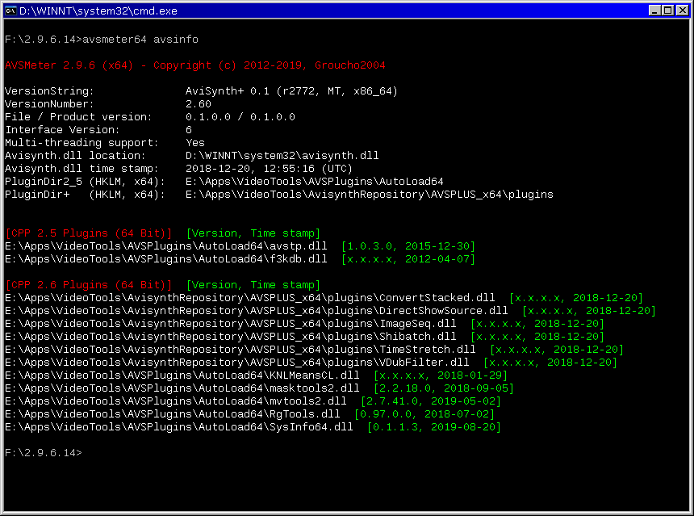

| Bug | Windows | Linux |
|---|---|---|
| Integer division by zero | 0xC0000094 STATUS_INTEGER_DIVIDE_BY_ZERO | SIGFPE [Integer divide by zero] |
| Floating point division by zero | No crash; the result is infinity or NaN. | |
| Null or wild pointer access | 0xC0000005 STATUS_ACCESS_VIOLATION | SIGSEGV [Access violation (address not mapped)] or [(no permission)] |
| Aligned SSE load/store (e.g. _mm_load_si128) on a misaligned address | 0xC0000005 STATUS_ACCESS_VIOLATION when built with clang-cl. No crash with MSVC: it compiles _mm_load_si128 into an unaligned load, so the bug stays hidden until the plugin is built with another compiler. | SIGSEGV [General protection fault (e.g. misaligned SSE/AVX access)]. No crash if the compiler folded the load into an AVX instruction. |
| Instruction set not supported by the CPU (e.g. AVX2 code on an older CPU) | 0xC000001D STATUS_ILLEGAL_INSTRUCTION | SIGILL [Illegal instruction] |
| Heap corruption (writing past an allocated buffer, double free) | No report; the process is terminated by Windows (exit code 0xC0000374, STATUS_HEAP_CORRUPTION). | SIGABRT, usually much later, in a different place. The module is libc.so.6, not the plugin. |
| Stack overflow (e.g. endless recursion, huge local arrays) | No report; the process is terminated (exit code 0xC0000005 or 0xC00000FD). | SIGSEGV [Access violation (address not mapped)] on the main thread; in a worker thread the process ends without a report. |